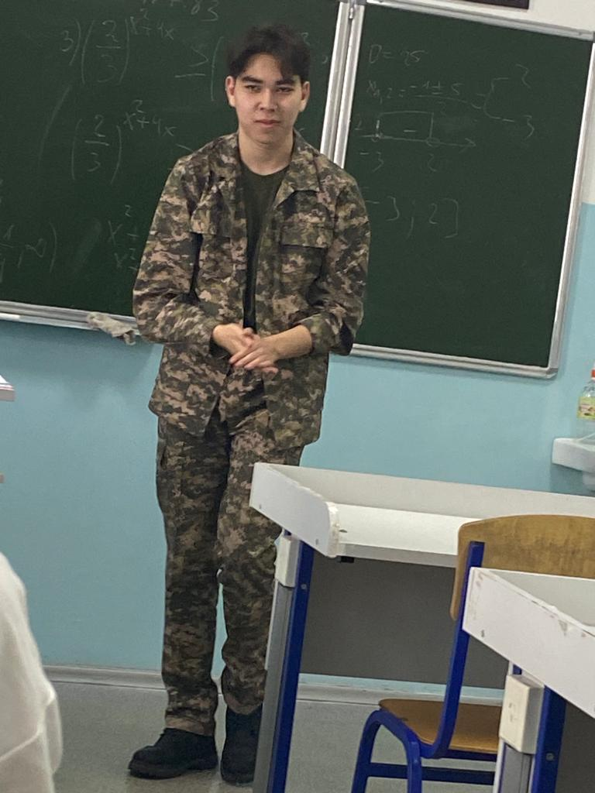

Айбек-айналасындағылардың назарынан тыс қалатын бай интеллектке ие тыныш және ұстамды адам. Интеллектуалды шеберлігіне қарамастан, ол өзінің талантын жасырады, ерекшеленуден гөрі көпшілікпен араласуды жөн көреді. Ол ең күлкілі анекдоттарды айтумен немесе кештің жаны болуымен танымал емес, өкінішке орай, бұл оны жиі қорлаудың нысанасына айналдырады. Алайда, оның досы болу бақытына ие болғандар Айбектің шынайы табиғатын біледі және дәл осы себепті олар оны жақсы көреді. Ол ең көпшіл немесе харизматикалық адам болмауы мүмкін, бірақ оның сабырлы күші мен мызғымас адалдығы оны кез келген Достық топтың баға жетпес бөлігіне айналдырады.
